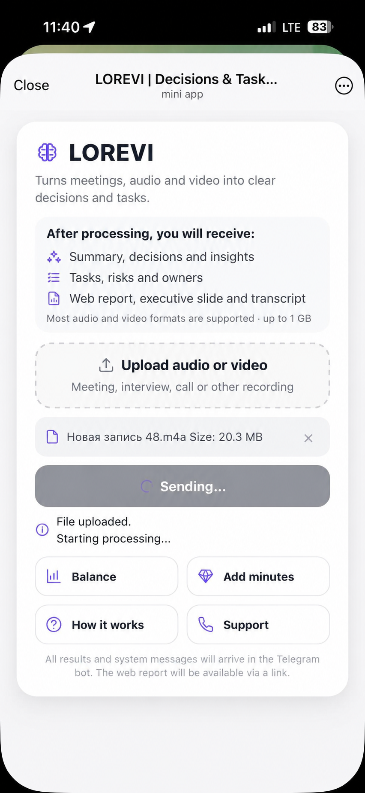

Upload your meeting
Audio or video, directly from Telegram.
LOREVI turns a meeting recording into decisions, tasks, risks and next steps — and packages the result as a Telegram report, Interactive Web Report and Executive PDF.


How it works
Upload meeting audio or video. LOREVI analyzes the conversation, extracts what matters and prepares everything for follow-up.
Audio or video, directly from Telegram.
Decisions, tasks, owners, risks and key takeaways are extracted automatically.
Telegram report, Interactive Web Report, Executive PDF and transcript.
 Product demo · video-ready
Product demo · video-readyOne result — three formats
LOREVI does not duplicate the same report in three formats. Each output is designed for a different job: share quickly, refine the result, or lock it into an executive artifact.
Get a structured result directly in chat and forward it to colleagues, your team or partners immediately.
Review details and transcript, edit or add to the result, share the current version, or delete the report from LOREVI.
Select the sections you need, remove the rest and generate a compact fixed-format executive slide for leadership, clients or the team.
AI analysis
The entire conversation is analyzed and converted into structured knowledge — from executive takeaways to concrete actions.
Need the context? The full transcript stays next to the result.
After the meeting
LOREVI handles the routine after the conversation so you do not have to replay recordings, write minutes or reconstruct agreements manually.
The important content is already structured and the transcript remains available when you need detail.
Decisions, tasks, owners and deadlines are already extracted.
The meeting result remains captured after the conversation ends.
Share the result in the format that fits the audience.
Less post-meeting routine. More time for the next action.
Use cases
Team, customer, project or interview — LOREVI helps preserve what matters and convert conversation into next actions.
Keep agreements from disappearing into the conversation. LOREVI captures decisions, tasks, owners and next steps.
Try it on a real meeting
Get 30 free processing minutes and test LOREVI on your own audio or video.
Free minutes refer to source recording processing time. Reports are available in 10 languages.

FAQ
How LOREVI works, what it produces and how meeting data is handled.
LOREVI is an AI service for working meetings. It analyzes meeting audio or video and produces structured results: summary, decisions, tasks, owners, deadlines, risks, insights, transcript, Telegram report, Interactive Web Report and Executive PDF.
Upload audio or video through the Telegram Mini App. LOREVI processes the recording, extracts actionable information and sends the result to Telegram with access to the Interactive Web Report and Executive PDF.
Depending on the meeting, LOREVI can extract an executive summary, decisions, tasks, owners, deadlines, risks, insights, key metrics and other structured blocks. The full transcript remains available next to the result.
The Telegram report is optimized for quick consumption and forwarding. The Interactive Web Report is for deeper review, editing, sharing and deletion. The Executive PDF is a compact fixed-format management artifact.
Yes. The Interactive Web Report can be edited or supplemented and the current version can be saved.
Yes. Forward the Telegram report, share the Web Report by link, or send the Executive PDF as a fixed document.
Yes. Before generating the PDF you can select the report sections you need and remove sections you do not need.
Reports initially support Russian, English, Spanish, Portuguese, Turkish, Indonesian, Hindi, Arabic, Uzbek and Persian.
Minutes refer to the duration of the source recording processed by LOREVI. The free package lets you test the product without entering payment card details.
LOREVI works through Telegram and does not require a separate registration form with full name, email or phone number. Raw uploaded audio or video is temporary source material and is deleted after successful processing. Derived report data remains available for product functionality; users can delete a report through the Web Report.
Your next meeting
Upload audio or video to LOREVI and get decisions, tasks, risks and next steps — without manually reviewing the meeting.
Try free in Telegram30 processing minutes free · No card · Reports in 10 languages